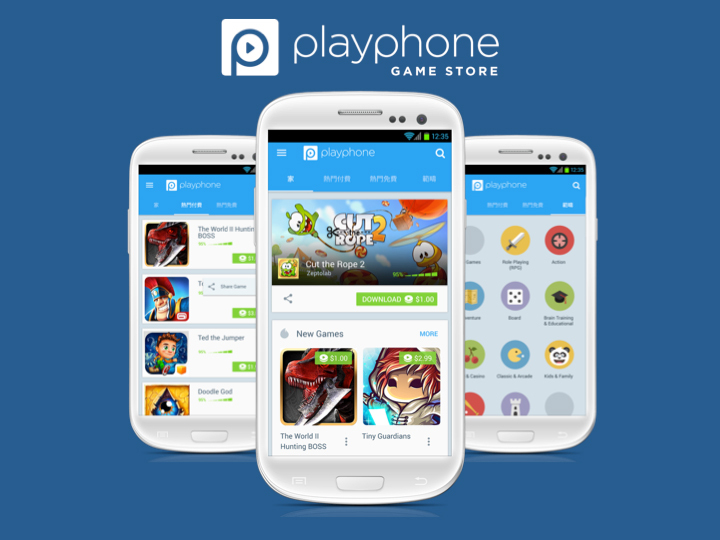

불과 두 달전만해도 저와 상관없는 이야기인줄 알았어요. 실리콘벨리에서 인턴십 경험이나 누구나 이름만 말해도 아는 대기업을 다니시는 선배님이 계시다는건 알고있었지만 저와는 다르게 다들 코딩을 어어어엄청 잘하시는분들이니깐요. 저랑은 거리가 너무 멀어보였어요. 퍼듀대학교에서 캡스톤 프로그램으로 한창 바쁠때 갑자기 학교 해외인턴십 페이지에서 공고가 떴어요 실리콘밸리 게임회사 Java 개발자 포지션 1년 장기인턴을 구하고 있다고요
그래도 에라 모르겠다~ 하고 지원
분명 저는 저 자신을 잘알아요. 분명 내 주위에 나보다 코딩을 훨씬 잘하는 사람이 많은데 내가 어떻게 붙겠어? 하는 생각이 먼저였어요 학교에서는 C 언어를 위주로 하기 때문에 Java 는 더더욱 답이 없어보였어요
' 안그래도 퍼듀 프로젝트 때문에 바쁜데 괜히 안될꺼 지원하다가 시간만 낭비하는거 아니야? '
라고 스스로 생각했죠.근데 그러기엔 미국이 너무 좋았어요. 교환학생부터 퍼듀 여름프로그램까지...
'어떻게든 이렇게 좋은 미국에 또 오고싶다.'
'될지 안될지는 내가 판단하지말고 회사에서 판단하라고하자. '
'어차피 곧 취준생되면 resume는 써야하잖아. 인터뷰도 연습이라고 생각하자!. '
라고 생각이 들었어요공고가 7월 26일에 뜨고 바로 몇일만에 resume를 작성해서 지원을 했어요. 그후로부터 든 생각
헐 나 공부해야겠다..
회사 측에서 요구하는건 이랬어요
1. On the university side only "must know" things are checked: * good average grades in CS and math courses * good knowledge of Java language * experience working with at least one database (SQL or NoSQL) * good understanding of HTTP protocol * general understanding of modern web technologies (SPA, Ajax, etc) * ability for basic communication in English
2. During the company side interview the following skills are checked: * solid understanding of base CS algorithms and data structures * ability to solve algorithmic tasks using Java * level of understanding of web related technologies
3. The company will be giving a small home project to check ability to develop complete project and verify good coding style
음 생각해보면 good average grades in CS and math 부터 망했지만 사실 저는 자바는 정말 기본기만 할줄 알았어요.. 그래서 resume를 내고나서 저 리스트에 있는것들을 충족하기위해 바로 공부하기 시작했어요 ㅋㅋㅋㅋ Java 컨셉부터 SQL, HTTP Protocol, Socket Programming, Web 기본 용어까지 대부분 유투브를 이용해서 혼자 학습했어요
그후로 8월 10일까지 연락이 없어서 서류부터 떨어졌다고 생각이 들었는데 바로 다음날에 Skype 인터뷰를 보자고 연락이 왔어요. 인터뷰에서는 코딩 지식 관련 질문이나 라이브 코딩같은걸 볼꺼라고 말해줬구요. 밤을 새서 인터뷰를 준비해야겠다 마음을 먹고 구글링을 통해 도움될만한건 다 찾아본것같아요 특히나 유투브로 인터뷰 관련 영상을 많이 봤어요.
생전에 인터뷰는 봐도 학교 교수님들한테 본게 다인데.. 진짜 회사 인터뷰를 본다고 생각하니 패닉어택이 왔던것같아요 심지어 라이브 코딩이라니... 처음 보는사람 앞에서 알고리즘 문제를 자바로 풀고 그걸 또 영어로 설명해야한다니... 차라리 내일이 오지 않았으면 좋겠다는 생각이 들었어요 ㅋㅋㅋㅋㅋ
나는 운이 엄청 좋나보다.
그렇게 오지 말았으면 좋겠던 다음날이 왔고 오후 5시에 퍼듀대에서 프로젝트를 하다 말고 빈방에 들어가서 Skype 인터뷰를 시작했어요. (사실상 하루종일 인터뷰 준비하느라 그날은 프로젝트 멤버들한테 엄청 미안했어요) 인터뷰는 약 30분정도 진행됬어요. 일단 첫 3분은 회사분이 간단하게 회사 소개, 앞으로 만약 인턴으로 오면 무엇을 하게되는지 얘기 해줬어요. 그후로 바로 질문이 날라왔어요.
can you briefly tell me about yourself now?
이 질문은 당연히 할껄 알았기 때문에 전날 달달 외웠던 대로 말했어요 ㅋㅋㅋㅋ 그 이후로는 다 기술관련 질문이였어요 HTTP 프로토콜 관련 질문도 물어보고 Web 관련한것도 물어봤어요. 하지만 그중에 Java 기초 지식에 관련한 질문이 엄청 많았어요. 아마 제가 뽑힌 인턴 자리가 자바 기본기를 굉장히 중요하게 생각해서 그런것같아요. 예를 들어
Can you describe how you would concatenate two Strings in Java?
처음에는 음 뭔소리지.. 그냥 둘이 합치는 알고리즘을 설명하라는건가?? 하고 루프를 사용해서..? 엄청 간단한건데 굳이 왜... 1분정도 생각하니깐 아 맞다 자바에서는 String class 는 더하더라도 original String 은 변하지않고 새로운 String이 변환되지? 더하려면 StringBuffer를 쓰는게 더 좋아! 라고 생각이 들더라고요 그래서 바로 Java에서는 String 과 StringBuffer 이 있는데 이러이러해서 StringBuffer를 써서 더하면 된다고 말했죠 그랬더니 바로 Good. Exactly 라고 하시더라구요. 굉장히 쉬운 문제였지만 아마 몇일동안 밤새며 자바를 다시 공부하지 않았더라면 이상하게 답을 했을꺼에요. 그런 질문을 한 10개정도 받고 대답을했어요. HashMap 에 관련해서 어떻게 주소가 저장되는지도 물어보고.. 하여튼 딱 공고에서 나와있던 Quality 를 체크했던것같아요. 정말 운이 좋게 ? 그 10개 질문 다 저는 미리 나올것같다! 하고 예상했던 질문이였어요. 인터뷰하면서 속으로 와 진짜 나 운이 좋다.. 라고 생각이 들었어요
30분의 인터뷰가 끝난 뒤
1시간만에 회사 측에서 메일이 왔어요. 미니 프로젝트를 내주셨어요. 자바로 멀티스레딩을 해서 Producer & Consumer 을 만드는거였어요. Producer는 dictionary 에서 랜덤한 사이즈로 랜덤하게 단어를 골라서 리스트를 만들고 Consumer는 그 리스트에 있는 단어들을 랜덤하게 골라서 한 긴 String으로 만드는거였어요. 생각보다 간단해서 빨리 구현해서 제출할 수 있었어요. 왠지 프로그램을 만드는게 중요한게 아니라 코딩 스타일과 얼마나 이해하게 쉽게 구현했냐가 중요한것 같아서 최대한 심플하게 구현하려고 노력했어요.
한국에 입국하는 동시에 합격 소식
그렇게 제출하고 4일 뒤에 퍼듀 프로그램이 끝나게 되서 한국행 비행기를 타게 됬어요. 나중에 다른 포스트에서 얘기할 예정이지만 퍼듀대가 너무 좋아서 비행기에서 울기도 하고 ㅋㅋㅋㅋㅋ 솔직히 한국에 돌아오기 싫었어요.. 그런 무거운 마음을 뒤로 하고 입국을 하게 되었어요 인천 공항에서 와이파이를 연결한 순간 회사에서 메일이 온걸 확인 했어요. 결과는... 합격!
다들 도전했으면 좋겠어요
원래 이런 글에 "전 공부못해요" "코딩못해요" 하면 다들 겸손해서 하는 소리인데 저는 실화입니다... 코딩을 잘하지 못해요 하지만 도전했고 합격을 할 수 있었어요. 우리 학교는 해외인턴을 지원을 정말 잘해줘서 지원하기도 쉽고 합격하면 왕복비행기, 비자에 드는 돈까지 지원해줘요. 저도 아직 고작 인턴에 합격한거고 갈길이 멀지만 도전을 계속 할 예정이에요. :)
이렇게 저는 1년동안 실리콘벨리 인턴을 가게 됬습니다
아직 비자가 나오지 않아서 언제 출국할지는 모르겠어요. 1년동안 최대한 실리콘벨리에 푹 빠져보고 진정한 개발자가 되고싶습니다.!!
 California SunnyVale에 위치한 게임 플랫폼 회사 Playphone